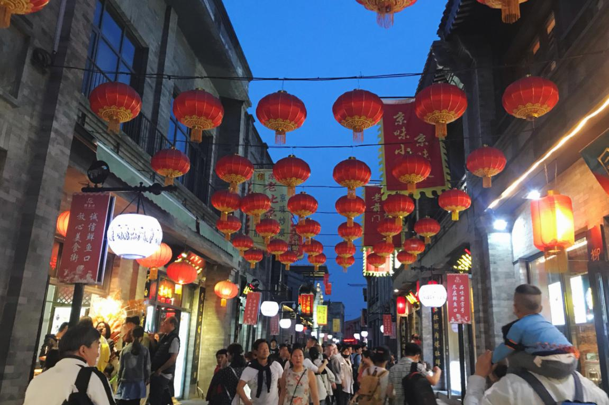
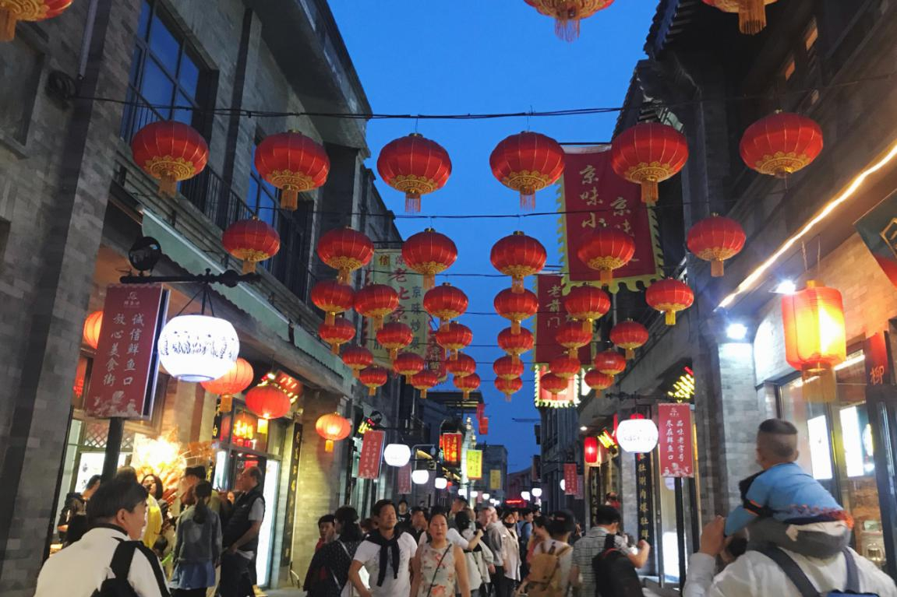

点击展开或收起
天安门广场 （地址：北京市东城区长安街（天安门和正阳门之间））
(1)标签 4.7分 世界上最大的广场 建筑人文
(2)简介
天安门广场位于北京的中轴线上，是共和国的中心广场。天安门城楼
、人民大会堂、国家博物馆、人民英雄纪念碑等众多国家象征都坐落于此，
各种大型庆典也都在这里举办，每天清晨的升国旗仪式更是吸引无数游客前来瞻仰。
(3)观看升降旗仪式
*天安门广场升(降)国旗仪式分为节日升旗仪式和平日升旗仪式。
每年元旦、春节、国际劳动节、国庆节和每月1日实施节日升旗仪式。节日升旗仪式由武警国旗护卫队38人、军乐
团62人实施，行进时吹奏《歌唱祖国》，升旗时吹奏《国歌》。其它时间为平日升旗仪式。平日升旗仪式由国旗护卫队38人实施，升旗时播放《国歌》录音。降旗仪式由国旗护卫队单独执行，没有音乐。
*升降旗时间
升(降)国旗仪式随每天日出时间而不同。具体升旗时间可以查看天安门管委会官网: http://www.tiananmen.org.cn/index.htm。
天安门广场夜间执行清场制，升旗前大约半小时开放入口，降旗后开始清场，关闭入口(根据季节和实际客流情况，公安部门会进行临时调整)。游客可在升旗前半小时，到广场附近等侯。
升旗仪式开始前，天安门警方将提前安排民警在各出入口维持秩序，在国家博物馆西门外和人民大会堂东门外群众较多的两处拉上疏导线，并对等候观看升骐的群众进行整队。厂场开放时，群众将由
民警引导、护送进入广场。
(4)主要景点
天安门广场位于天安门正南，广场中央矗立着人民英雄纪念碑和庄严肃穆的毛主席纪念堂，广场西侧是人民大会堂，东侧是中国国家博物馆，南侧是两座有着几百年历史的古城楼一一正阳门和前门箭楼，这些雄伟的建筑与天安门一起，构成了现在的天安门广场。
现在的天安门广场，是共和国举行重大庆典、盛大集会和外事迎宾的重地。从建国至今，天安门广场经历了多次大阅兵，见证了中华民族的崛起和振兴。
(5)开放时间
升旗前(夏季一小时,冬季半小时)至降旗后(夏季一小时,冬季半小时)开放,其余时间清场,根据季节和实际客流情况,公安部门会进行临时调整。
(6)门票信息
免费开放
登天安门城楼15元/人,学生及70岁以上老年人5元/人,现役军人等免费。
(7)联系方式
官网
http://www.tiananmenlvyou.com.cn/
电话
01063095745
(8)交通信息
*公交 到达天安门广场东：2路, 5路, 22路, 120路, 126路, 203路夜班车, 210路夜班车, 专1路, 专2路 到达天安门广场西：2路, 5路, 120路, 126路, 210路夜班车, 专1路, 专2路
*地铁 地铁1号线天安门东、天安门西站下车
(9)旅游时节
四季皆宜，国庆前后最佳，介时广场将有大型主题花坛供人们观赏。
(10)游玩贴士
1、讲究文明礼貌。使用敬语，不口吐脏字;衣冠齐整，不袒胸露背;互谅互让，不争吵斗殴。
2、维护环境卫生。不随地吐痰及口香糖，不随地乱扔瓜果皮核，烟头纸悄，食品包装及其他包装物，不随地乱倒污水污物。
3、爱护公共设施。不踩踏垃圾桶，不蹬爬华灯基座，不损坏旗杆、护栏、灯具、电器、电信设备和公益告示牌匾。
4、爱护广场绿地。不准进入绿地休息玩耍,不损坏绿地内的喷水设施，不攀折花草树木。
5、维护广场秩序。不在广场踢足球、滑旱冰，不从事无照经营活动，不携带凳子参加广场升降旗仪式。
6、保护文物古迹。不准在石质文物上乱写、乱画、刻划、张贴宣传材料。
7、未经管理部门批准，各种机动车、自行车、人力三轮车不准进入和穿行中心广场。
8、希望广大群众自觉遵守上述规定，服从值勤人员和工作人员的指挥管理。


 
